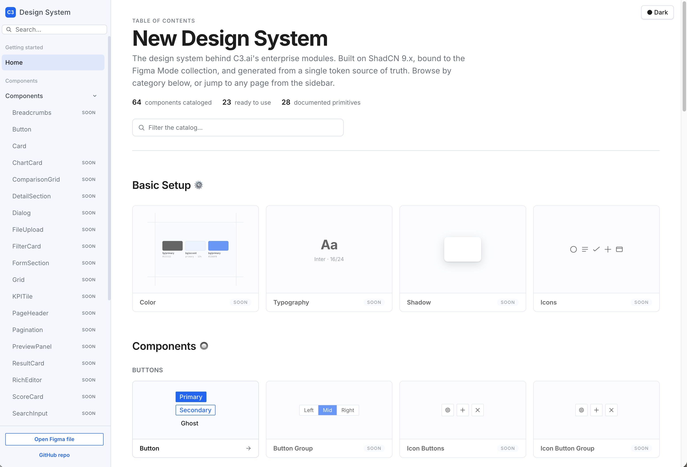
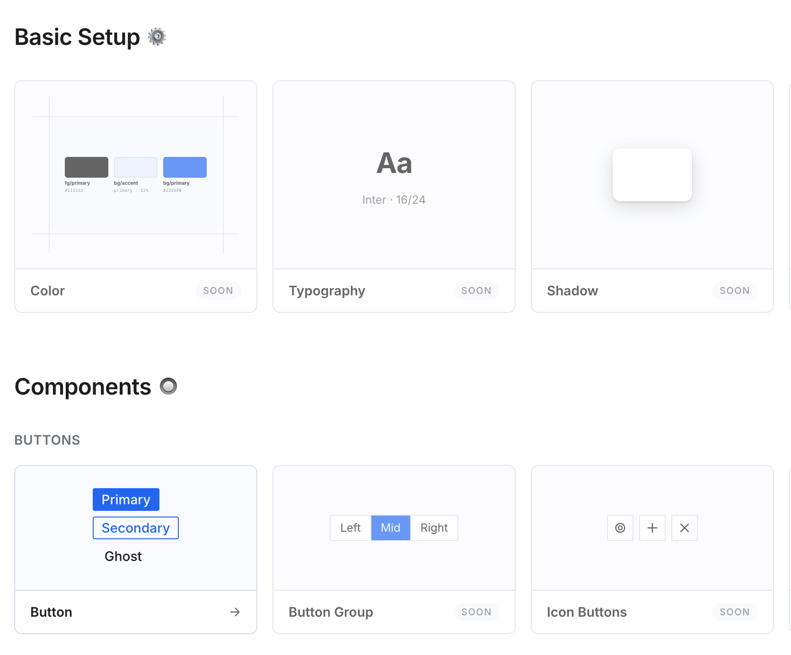

At my last role as UX Director at Omnissa, we used a product named Supernova to build and host our design system documentation. It was a fairly feature-packed, cloud-hosted design documentation site that included content management, multiple users, version history, etc. It worked pretty well. Fast forward to now and I just had Claude Code build a fully functional design system website with code snippets, interaction, links back to the Figma file and GitHub.

The initial experience was built in about 2 hours. Going through all the components will take some time but it's so amazing to not have to wait on a busy developer to update an interaction, or apply design changes to the site. I can have the components built and then test them and ensure that all the expected functionality is there for each component.

The Moment I Slowed Down
Claude is good at getting going and making rapid progress, yet, I realized something that made me slow down. Interacting with the agent, it was asking me how to code the charts and a few complicated elements. I knew we used ECharts for those in our production environments. So I didn't need to waste credits on that effort and they likely wouldn't be coded correctly on the doc site.
I decided to ask a developer I work with if he or I should be building the components out as interactions. He said it was fine that I did, but he asked me to query Claude Code this:
The Developer's Checklist
- Create the CSS variables for the atomic design tokens
- Map the CSS variables to Tailwind classes
- Build the design system using ShadCN, EChart, and the C3 Tailwind theme
So the pipeline became: C3 CSS variables → Tailwind → ShadCN
This was very important because Claude wasn't actually using ShadCN and Tailwind as a base and I didn't realize it. About 1.5 months ago we were using Cursor and I had it build some things with ShadCN as a base. When we moved to Claude Code, those instructions must have gotten lost despite feeding Claude our GitHub repository which held base knowledge of design token mapping, etc.
Alignment with Production
Once I clarified this detail, I knew that what I was creating would be more aligned with our code base as a company and the interactions and base elements would be correct.
After reviewing all the design and code implementation, my idea is to fill in the documentation details over time and build Skills and Rules that can be fed back into our agent for when dev and PMs need to create development and prototypes.
What's Next?
How are you building agent skills for design in the enterprise space? I'd love to hear your thoughts — reach out on LinkedIn or drop me a message.